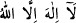
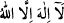

39. Çekeceğiniz ceza yapmakta olduğunuzdan başka bir şeyin cezası değildir.
“Çekeceğiniz ceza yapmakta olduğunuz” kötülüklerin cezası“ndan başka bir şeyin
cezası değildir.”
İbn Şeyh der ki: “burada çok cömert, çok merhametli, kendi zâtına yönelik olarak her
türlü fayda ve zarardan yüce ve münezzeh olan Allah Teâlâ, kullarına azap eder mi
şeklinde düşünülebilir. İşte Allah Teâlâ “Çekeceğiniz ceza yapmakta olduğunuzdan
başka bir şeyin cezası değildir” kavliyle buna cevap vermiştir. Bunun izahı şudur:
Hikmet; hayır ve itaatla emretmeyi; mâsiyet ve çirkin şeylerden de yasaklamayı
gerektirir. Emir ve nehiyden kastedilen şey ise ancak sevabı teşvik etmek ve azap ile
tehdit etmekle gerçekleşir. Bu durum önceden haber verilince yalandan korunmak için
gerçekleştirilmesi ve icrası gerekli oldu. İşte kâfirler, bundan dolayı azaba düçâr
oldular.”
Artık akıllı kişi kıyametten ve orada cezaya çarptırılmaktan sakınmalıdır. Böylece
inkardan ikrara, şüpheden yakin ve kesin inanca, kibirden tevazu ve alçak gönüllülüğe,
bâtıldan hakka, fânîden bâkîye, şirkten tevhide ve riyâdan ihlâsa geçmelidir.
Hz. Ali (r.a.)’a mü’minin alâmeti soruldu. Hz. Ali: “Dörttür” buyurdu ve bunları şöyle
sıraladı: 1) Mü’min kalbini kibir ve düşmanlıktan temizlemelidir. 2) Dilini yalan ve
gıybetten temizlemelidir. 3) Kalbini ‘görsünler’, ‘duysunlar’ ve ‘desinler’
düşüncesinden temizlemelidir. 4) Karnını haram ve şüpheli şeylerden temizlemelidir.
Kibrin en kötüsü; îmanın esası, zikirlerin en üstünü ve ihlas sözü olan “__WORD__
demekten kibretmek/kaçınmaktır. Kul, şart ve rükûnlarına riâyet ederek bu sözle bütün
yüksek mertebelere yücelir. Hasan Basrî’ye “__WORD__ diyen kimse cennete girer”[205]
rivâyeti hakkında ne dersin?” diye sormuşlar, O (rh.a.) da bu sözün haddini bilen ve
hakkını veren kimsenin cennete gireceğini ifade etmiştir.
Fakîr (Bursevî)’in beyitlerinden:
Kime Hak’tan yardım olursa
O kimsenin işi tevhidden başkası olmaz
Tevhîd zikri hâlin mayasıdır
Onu geçince gerisi hep laftır
[201]. Müsned, II, 228.
[202]. Taberânî, el-Mu’cemu’s-sağîr, s. 280.
[203]. Deylemî, Hadis no: 1293; Münâvî, I, 245.
[204]. Mevsûatu etrâfi’l-hadîs, IX, 383 (Hatîb, el-Fakîh ve’l-mütefakkih, I, 16’dan).
[205]. Münâvî, VI, 189.